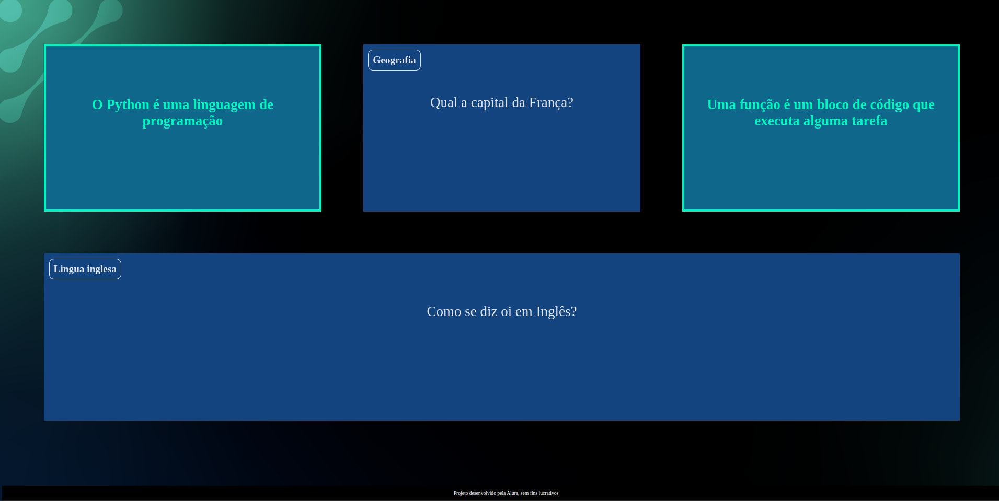
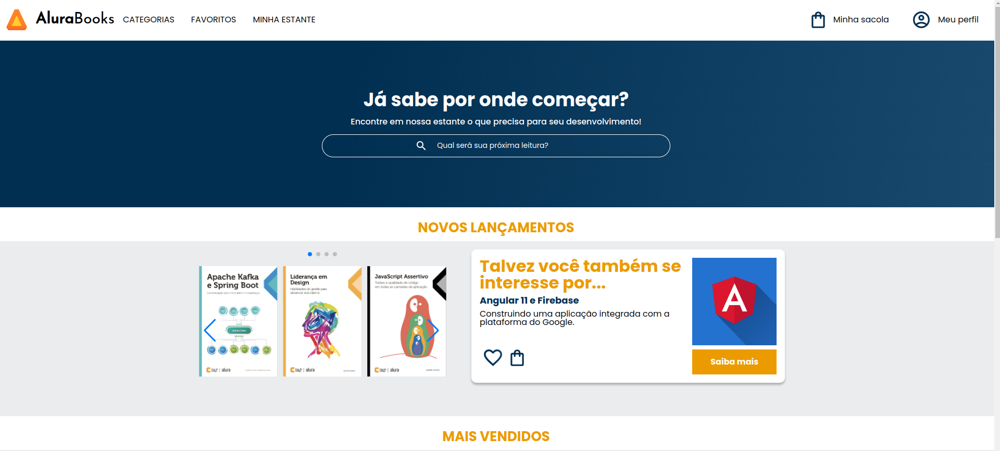

Meus projetos

Minha Biblioteca: Uma Webpage Personalizada
esse projeto foi criado para charadas

Decidindo o Futuro: é um projeto de plataforma de livros responsavel para desktop,tablet e celular ,desenvolvido em html, css e JavaScript durante diverso cursos do alura. Artificial
Este projeto é um jogo interativo baseado em navegador que explora o impacto e as implicações da Inteligência Artificial (IA) na sociedade, permitindo que as pessoas jogadoras façam escolhas que influenciam o desenrolar de uma narrativa sobre o futuro da IA.